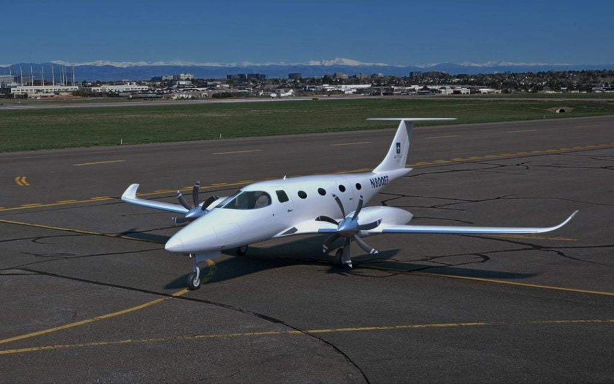
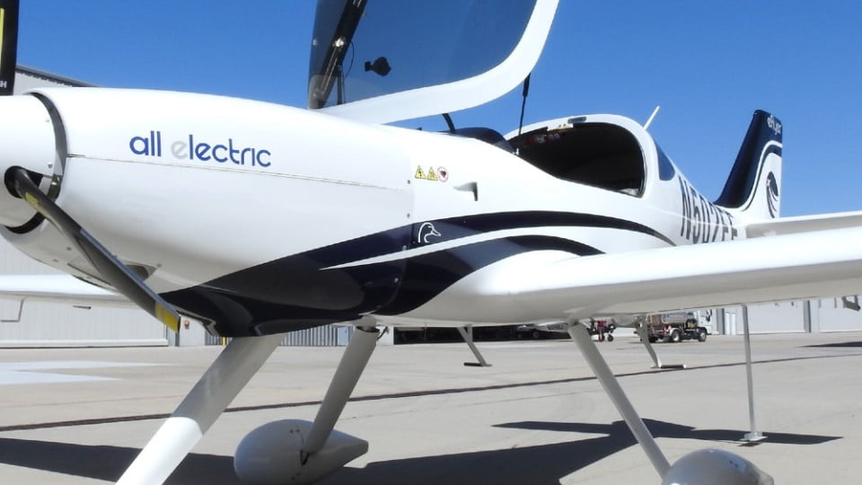
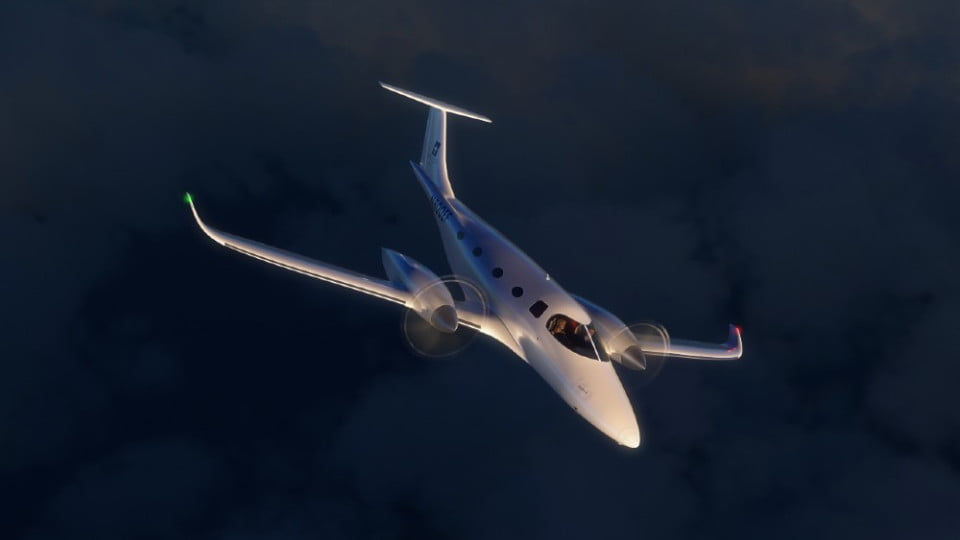
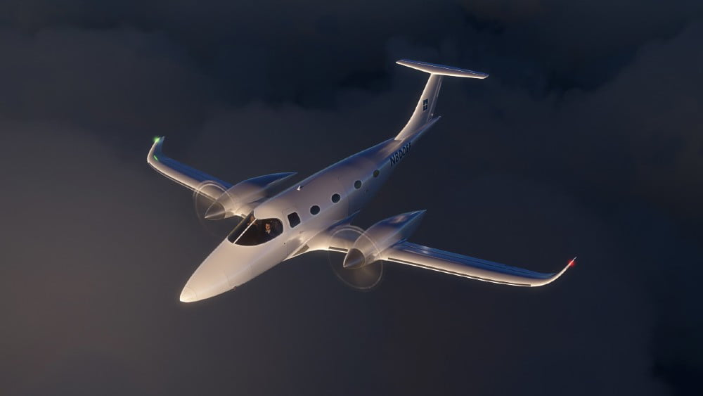

eFlyer 800 လို့ အမည်ပေးထားတဲ့ ဒီလေယာဉ်ဟာ ပန်ကာ နှစ်လုံးတပ် ခရီးသည်တင် လေယာဉ် ဖြစ်ပြီး ခရီးသည် ၈ ဦးနဲ့ လေယာဉ်မှူး ၂ ဦး လိုက်ပါ ပျံသန်းနိုင်မှာ ဖြစ်ပါတယ်။ အမြန်နှုန်း တစ်နာရီ မိုင် ၃၆၈ မိုင်ထိ ပျံသန်းနိုင်ပြီး အကွာအဝေး မိုင် ၅၇၅ မိုင်ထိ ပျံသန်းနိုင်မှာ ဖြစ်ပါတယ်။

Bye Aerospace ရဲ့ ပထမဆုံး လျှပ်စစ်စွမ်းအင်သုံး လေယာဉ်ကတော့ အင်ဂျင် တစ်လုံးတပ် နှစ်ယောက်စီး အမောင်းသင် လေ့ကျင့်ရေး လေယာဉ်ပဲ ဖြစ်ပါတယ်။ eFlyer 2 လို့ အမည်ပေးထားတဲ့ ဒီ လျှပ်စစ်စွမ်းအင်သုံး လေယာယဉ်ကို ကုမ္ပဏီ စတင် တည်ထောင်ခဲ့တဲ့ ၂၀၁၄ ခုနှစ်က ထုတ်လုပ်ခဲ့တာ ဖြစ်ပါတယ်။ ဒုတိယမြောက် ဖြစ်တဲ့ eFlyer 4 ကတော့ လူ ၄ ယောက်စီး အပေါ့စား သယ်ယူပို့ဆောင်ရေး လေယာဉ်ဖြစ်ပြီး လေကြောင်းတက္ကစီ အနေနဲ့ အသုံးချဖို့ ရည်ရွယ်ပြီး ထုတ်လုပ်ခဲ့တာ ဖြစ်ပါတယ်။ ဒီ အမျိုးအစား နှစ်မျိုးလုံးအတွက် လက်ရှိ အချိန်အထိ တစ်မျိုးကို အစင်း ၃၆၀ ခန့် ရောင်းချဖို့ အမှာများကို လက်ခံရရှိထားပြီး ဖြစ်ပါတယ်။

ယခုနောက်ပိုင်း ကာလတွေမှာ ခရီးသည် များများနဲ့ အကွာအဝေး အတန်အသင့် သွားလာနိုင်တဲ့ လျှပ်စစ်စွမ်းအင်သုံး ခရီးသည်တင် လေယာဉ် တွေကို ဈေးကွက်က တောင်းဆိုလာကြပါတယ်။ နောက်ပြီး ဒီ လျှပ်စစ်လေယာဉ်တွေရဲ့ နေ့စဉ် ပျံသန်းစားရိတ် ကလဲ ပုံမှန် လေယာဉ်ဆီသုံးတဲ့ လေယာဉ်တွေထက် နည်းဖို့ကို ဈေးကွက်က တောင်းဆိုလာပါတယ်။ အခု eFlyer 800 ကို ဒီလို ဈေးကွက်ရဲ့ တောင်းဆိုမှုကို ဖြည့်ဆည်းပေးဖို့ ရည်ရွယ်ပြီး ထုတ်လုပ်တာ ဖြစ်ပါတယ်။
ဒီ eFlyer 800 လေယာဉ်ဟာ အကွာအဝေး မိုင် ၅၇၅ မိုင်ထိ ပျံသန်းနိုင်ပါမယ်။ ဒီလို ပျံသန်း ပြီးတာတောင် သူ့ရဲ့ အင်ဂျင်တွေ အတွက် အရန်လျှပ်စစ် နောက်ထပ် ပျံသန်းချိန် မိနစ် ၃၀ စာ ကျန်ရှိနေအုံးမှာပါ။ အမြင့်ပေ ၃၅,၀၀၀ အထိ အမြင့်ဆုံး ပျံသန်းနိုင်ပြီး လေယာဉ် တက်တဲ့ အချိန်မှာ တစ်မိနစ်ကို အမြင့်ပေ ၃,၄၀၀ နှုန်းနဲ့ ပျံတက်နိုင်မှာ ဖြစ်ပါတယ်။

နောက်ပြီး အရေးအကြီးဆုံး အချက်ကတော့ လေယာဉ် ပျံသန်းမှုအတွက် ကုန်ကျစားရိတ်ဟာ လောင်စာဆီသုံး လေယာဉ်တွေရဲ့ ၅ ပုံ ၁ ပုံပဲ ကျသင့်မှာ ဖြစ်ပါတယ်။ အသံဆူညံမှုကလဲ အရမ်းကို တိုးညှင်းပြီး ကာဘွန်ဒိုအောက်ဆိုဒ်လဲ လုံးဝ ထွက်ခြင်း မရှိပါဘူး။
ဒီလေယာဉ်ရဲ့ ဒီဇိုင်းကလဲ လေဆွဲအားကို နည်းနိုင်သရွေ့ နည်းအောင် တည်ဆောက်ထားတာပါ။ နောက်ပြီး ပုံမှန် အခြားအရွယ်တူ လေယာဉ်တွေထက်လဲ အင်ဂျင်အား ပိုကောင်းပါတယ်။ ဒီနှစ်ခု ပေါင်းစပ်လိုက်တဲ့ အခါမှာ ဒီလေယာဉ်ရဲ့ ပျံသန်းမှု ကုန်ကျစားရိတ် (operating cost) ဟာ ၈၀% လောက်ထိ သက်သာသွားပါတယ်။ ဒီ အချက်က eFlyer 2 ပျံသန်းမှု ကုန်ကျစားရိတ် ပေါ် အခြေခံပြီး တွက်ချက်ထားတာ ဖြစ်ပါတယ်။ ပုံမှန် ပန်ကာအင်ဂျင် တစ်လုံးတပ် အပေါ့စား လေယာဉ်တွေ တစ်နာရီ ပျံဖို့ ဒေါ်လာ ၁၁၀ ကုန်ကျချိန်မှာ eFlyer 2 တစ်နာရီ ပျံဖို့ ၂၃ ဒေါ်လာ ပဲကုန်ကျပါတယ်။
ဒီလို ကုန်ကျစားရိတ် သက်သာတဲ့ ပျံသန်းမှုကို ရရှိစေနိုင် တာကတော့ လျှပ်စစ်စွမ်းအင်သုံး အင်ဂျင်ကြောင့်ပဲ ဖြစ်ပါတယ်။ နောက်ပြီး ဒီ အင်ဂျင်တွေ အားပြည့် အင်ပြည့် လည်ပတ်နိုင်ဖို့ လိုအပ်တဲ့ စွမ်ရည် ထုတ်ပေးတဲ့ ဘက်ထရီ တွေကြောင့်လဲ ပါပါတယ်။

လေယာဉ် လုံခြုံရေး အနေနဲ့ လေယာဉ် တစင်းလုံးအတွက် လေထီး တပ်ဆင်ပေးထားမှာ ဖြစ်ပါတယ်။ ဒါ့အပြင် အင်ဂျင် နှစ်လုံးတပ်မို့ တစ်လုံးပျက်သွားသည့်တိုင် ကျန်တဲ့ တစ်လုံးနဲ့ အန္တရာယ်ကင်းစွား ဆက်လက်ပျံသန်းနိုင်မှာ ဖြစ်ပါတယ်။ နောက်ပြီး အင်ဂျင်တစ်လုံးစီမှာလဲ လျှပ်စစ်မော်တာ နှစ်ခုကို ထည့်သွင်းတည်ဆောက် ထားပါတယ်။ ဒါကို dual redundant motor windings လို့ ခေါ်ပါတယ်။ နောက်ပြီး လျှပ်စစ် ဘက်ထရီတွေကိုလဲ အခန်းတချို့ ပျက်သွားရင်တောင် လုံလောက်တဲ့ စွမ်းအင်အပြည့် ထုတ်ပေးနိုင်အောင် တည်ဆောက်ထားပါတယ်။
နောက်ပြီး မှာယူသူက ထည့်သွင်းမှာယူနိုင်တဲ့ အခြား စနစ်တွေကတော့ နေရောင်ခြည်သုံး solar cells တွေ၊ အရေးပေါ် အလိုအလျောက် လေယာဉ်ဆင်း စနစ် (Emergency auto-landing system) နဲ့ မြေပြင်ပေါ်မှာ ပြေးလမ်းပေါ် သွားနေတုန်း လေယာဉ် ပန်ကာအစား ဘီးတွေနဲ့ မောင်းနှင်တဲ့ စနစ်တွေ ဖြစ်ပါတယ်။
ဒီလေယာဉ်ကို လာမယ့် ၂၀၂၂ နှစ်ကုန်ပိုင်းလောက်မှာ စတင် ထုတ်လုပ်နိုင်လိမ့်မယ်လို့ ကြေငြာထားပါတယ်။ လက်ရှိအချိန်ထိတော့ လေယာဉ်ဈေးနှုန်းကို ကြေငြာခြင်း မရှိသေးပါဘူး။
Reference: This New 8-Seat Electric Airplane Costs 80% Less to Fly Than Conventional Aircraft